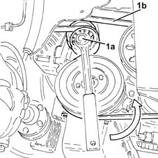

1092G10 single engine belt r r
- Path
- Procedures > 10 ENGINE > 1092 VARIOUS ENGINE COMPONENT CONTROLS > 1092G single drive belt for various engine components > 1092G10 single engine belt r r
- Kind
- repair procedure (removal / refitting; the operation number is the code)
- Applies to
- engines: 1.3 JTD; all production periods
- Interactive page
- https://sloeber94.github.io/elrnDB-lYpsln/en/#/2429086
Applies to: engines: 1.3 JTD; all production periods
 Removing
Removing
 Refitting
RefittingPosition the vehicle on the ramp.
Proceed with removal 4450B04 right front wheel r r .
Proceed with removal 7055B66 Engine compartment DUST SHIELD protection in right front wheel arch - R.R. .
Proceed with removal 7055B91 Right front WHEEL ARCH LINER - R.R. .
1. Use a spanner on the moving tensioner (1a) and remove the engine components single drive belt (1b).

Applies to: engines: 1.3 JTD; all production periods
Refitting
RemovingAdjust the moving tensioner and fit the engine components single drive belt using a spanner.
Proceed with refitting 7055B91 Right front WHEEL ARCH LINER - R.R. .
Proceed with refitting 7055B66 Engine compartment DUST SHIELD protection in right front wheel arch - R.R. .
Proceed with refitting 4450B04 right front wheel r r .
Remove the car from the ramps.
Topics linked from this page (3)
- 4450B04 right front wheel r r
- 7055B66 Engine compartment DUST SHIELD protection in right front wheel arch - R.R.
- 7055B91 Right front WHEEL ARCH LINER - R.R.
Topics that link to this page (18)
- 1020B10 cover of timing system with chain drive - r + r replace oil seal and gasket
- 1020B30 timing system cover oil seal - replace
- 1032A12 CHAIN AND GEARS for timing system - R.R. for timing or Replacement.
- 1032B46 toothed drive pulley - r + r
- 1032B60 bolt pulley - r r
- 1032C40 Timing CHAIN TENSIONER PLATE - R.R.
- 1080D35 Engine oil collection MANIFOLD - R.R.
- 1084B12 engine oil pump - r+r
- 1084B26 emgine oil intake duct - r r
- 1084B45 RIGID air supply PIPE between air-air heat exchanger and intermediate hose - R.R.
- 1088C10 water pump - r + r
- 1092A10 Crankshaft services PULLEY - R.R.
- 1092A14 Pulley support FLANGE on crankshaft - R.R.
- 1092G14 engine component single belt mobile tensioner - r + r
- 5040A20 air conditioner compressor - r+r - includes fluid level check and top up if necessary
- 5040A26 compressor mount - r r
- 5530A10 alternator - r+r
- 5530A40 alternator brackets/mount/spacer - r r